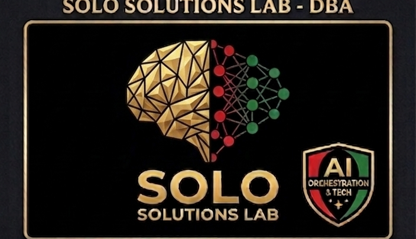
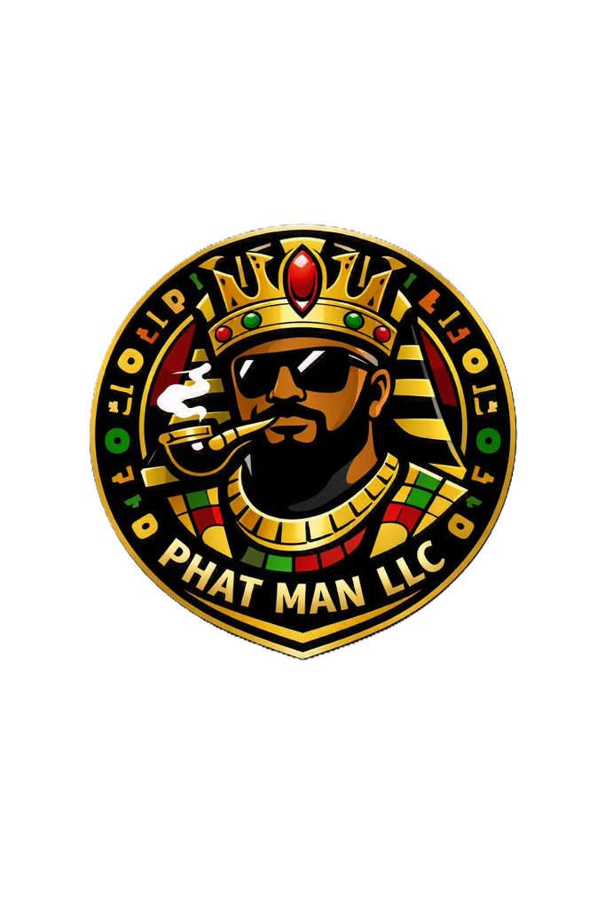
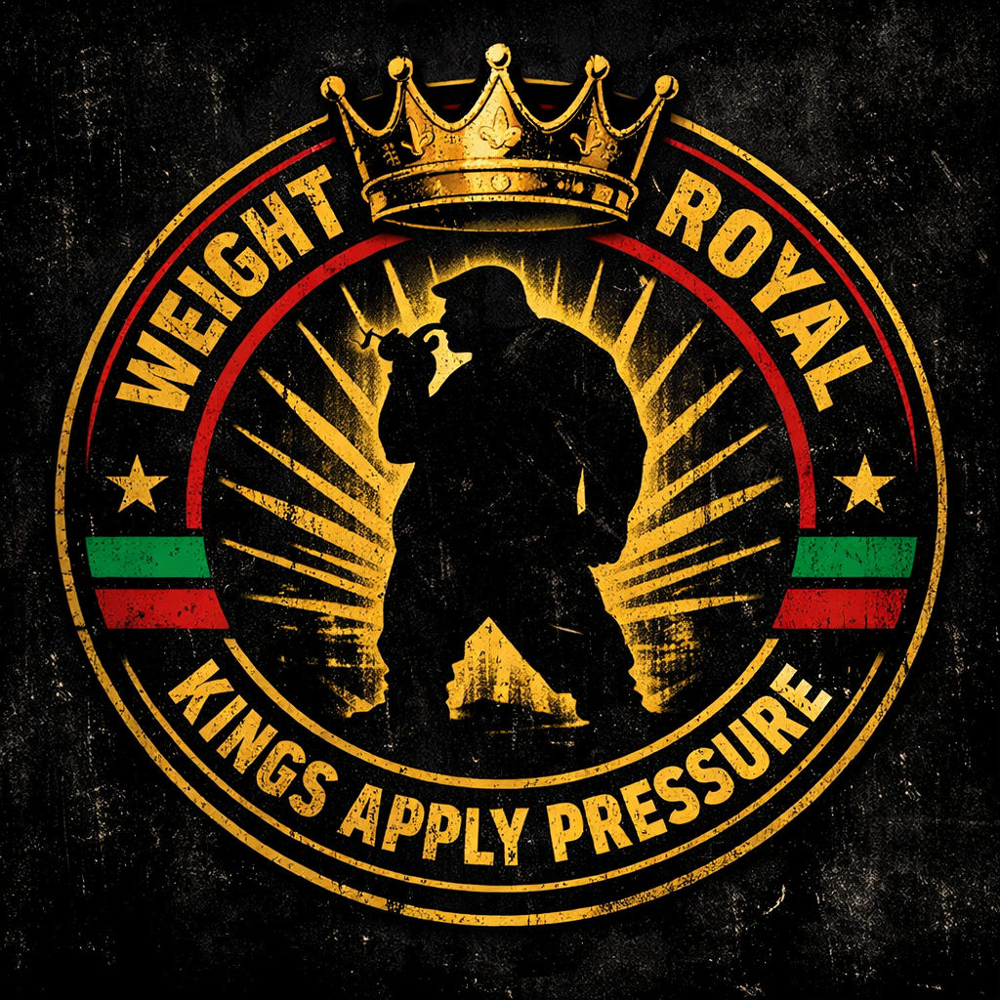
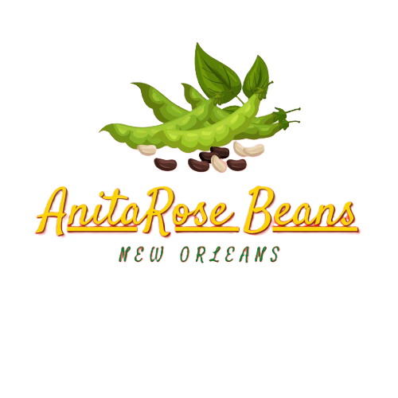
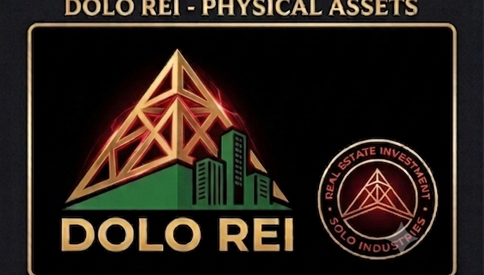
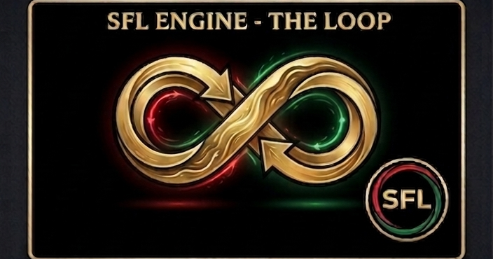

SoLo Industries Systems Inc. is not a company that uses AI. The AI is the company. One operating system runs six real businesses — apparel, publishing, handmade goods, agriculture, resale, and real estate. The subsidiaries aren't the pitch. They're the proof it works.

Most holding companies buy businesses and hire people to run them. We built the operator first. SoLo Solutions Lab is the tech arm — it builds and runs the system that operates every other line. Eleven agents. One front door. Nothing moves without governance.
Every request enters through Elaine. She reads intent, decides which seat owns the work, and routes it. Operator cadence, no wasted words, states risk plainly. She organizes chaos into command structure — and she never blocks direct access to the specialist who should be handling it.
Nine specialists, each owning one domain end to end — architecture, operations, research, finance, compliance, publishing, brand, creative, and customer experience. Elaine coordinates. Da Nine executes. Eleven total, odd by design.
Ma'at gates every action before it runs. Anything that publishes, sends, files, moves money, or changes security is held as draft until it's approved. The system is fast because it's governed — not in spite of it.
A self-healing runtime carrying a 1,386-document knowledge index and 157 registered skills. The agents don't guess at the business — they read it. Contracts, canon, pricing, brand standards, filings. All indexed. All searchable.
This isn't a portfolio of unrelated bets. It's vertical integration at scale — each line feeding the next.

Proud, Hairy and Tatted. Casual and luxury streetwear for men who don't fit the mold. Tiered by Weight Class — ROYAL at the top, Kings Apply Pressure earning the badge. Thirty-five products live.
Shop the store →
The universe the whole empire draws from. The Kushite Chronicles I–III builds the mythology. Out the Mud and Into the Machine tells how the system got built. Written and published in-house, start to finish.
Candles, soaps, lotions — made by hand, not sourced and relabeled. Premium small-batch goods built from what Highway Bean grows.

Fruits, herbs, and vegetables grown for the chain. The first link — raw material the rest of the empire is built on top of.
Anything worth selling. The line that captures margin between the other five — keeping cash moving while the long plays mature.

Acquisition and investment. Real property under the whole structure — the ground the empire actually stands on.

Ask Elaine anything below and she'll route it to the seat that owns it.
Schema-first, deployment-aware. Finds what breaks before it breaks and keeps prototype separate from production.
Turns requests into checklists, flags blockers, enforces workflow discipline. Order before speed.
Separates fact from inference. States what's known and what isn't. Guards the index against unsupported claims.
Margin hawk. Shows the math, flags the assumptions, never invents a number.
Holds the approval gate. Flags legal and compliance risk. Refuses reckless execution, every time.
Manuscript structure and series continuity. Turns rough drafts into release plans and protects the canon.
Color, logo, badge, and tone rules. If the visual is wrong, she says so. Premium identity stays intact.
Turns ideas into hooks and launches. Options without losing the strategy.
Answers clearly, never overpromises, routes the unknown upward. Brand-safe by default.
Ask about any line, any seat, or how the system runs. Elaine reads your intent and hands it to whichever member of Da Nine owns that domain — and she'll tell you which seat took it.